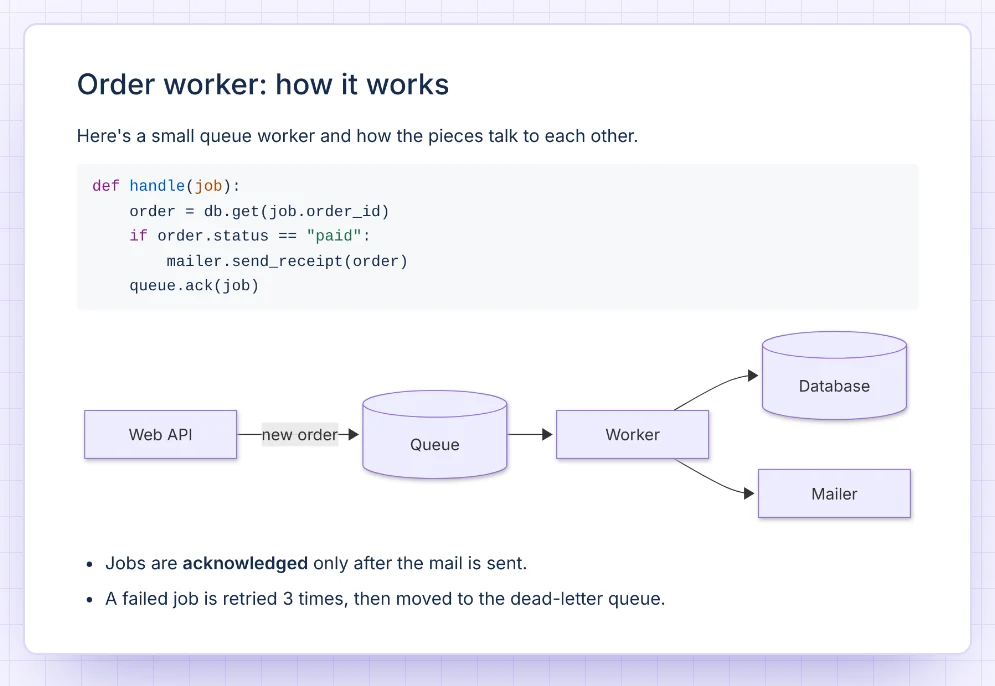
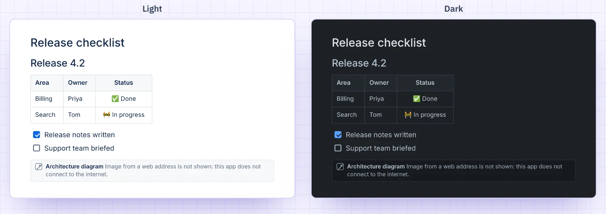

Markdown Live Editor · Confluence macro
Paste Markdown into Confluence, see it formatted.
Type or paste Markdown, from a README, your notes or an answer from an AI chat, and see it formatted as you type. Tables, task lists, code in colour and Mermaid diagrams. It is drawn in the browser of the person reading the page, so your text never leaves Atlassian.
Not on the Atlassian Marketplace yet.

Code in colour, diagrams drawn
GitHub-style Markdown: tables with aligned columns, task lists, strikethrough, and web
addresses that become links. Code blocks get colours for 33 languages, and a
mermaid code block becomes a diagram on the page.

Paste it as it is
An answer copied from an AI chat as one markdown code block is unwrapped when you paste it.
Mistakes point to the line
A diagram with a mistake marks its line in your Markdown. Readers see a short note and the diagram's code.
Step back safely
Up to 20 saved versions per macro, under Versions, so a bad edit is not lost text.
Safe, and it stays inside Atlassian
HTML in the Markdown is cleaned, so no script can run. Images from web addresses are not loaded; their description is shown instead. Light and dark mode follow your Confluence theme.

Runs on Forge, draws in your browser
The macro runs on Atlassian Forge. The Markdown is saved in the macro on the Confluence page. Version history is kept in Forge app storage in your cloud site. The app does not connect to the internet, and nothing is sent to Dortus.
- Platform
- Atlassian Forge macro
- Source
- In the macro on the page
- Rendering
- In the viewer's browser
- Outside servers
- None, no egress
Documentation
How to insert Markdown, what works, and the limits.
On this page: Insert Markdown · What works · Images · Diagrams · On the page · Version history · PDF and Word export · Limits · Privacy and security · Contact
Insert Markdown
- Edit a Confluence page and type
/markdown. Choose Markdown Live Editor. - The editor opens: your Markdown on the left, the result on the right. In a narrow window the result goes under the Markdown.
- Paste or type Markdown, or click an example: README, Table, Checklist, Code or AI answer with a diagram. If an example would replace your own text, the editor says so and offers Undo.
- Click Insert, or press Ctrl+Enter (Cmd+Enter on a Mac). Escape cancels; if you changed the text, press it twice.
- Publish the page.
To change it later, edit the page, select the macro and click the pencil.
Pasting from an AI chat: paste as it is. An answer that was copied as one ```markdown block is unwrapped. Other code blocks, such as ```python, are left alone.
What works
- The basics: headings, paragraphs, bold, italic, inline code, lists, quotes, rules, links and line breaks.
- GitHub-style extras: tables (with
:--,:-:and--:alignment), task lists (- [ ]and- [x], also nested), strikethrough, and addresses starting withhttp://orhttps://become links. - Code blocks in colour for 33 languages, among them Bash, C, C#, Go, Java, JavaScript, JSON, Python, SQL, TypeScript and YAML. Other languages, and blocks without a language, are shown as plain code.
- Mermaid: a
```mermaidblock becomes a diagram. See Diagrams. - Harmless HTML such as
<details>,<kbd>,<sub>and<br>stays. Anything that could run a script, load something or restyle the page is removed.
Not built (yet): footnotes, emoji shortcodes such as :smile:, math such as $x$, GitHub alerts such as > [!NOTE], and front matter. They show as plain text.
Images
The app does not connect to the internet, so images from web addresses are not loaded. In their place the page shows a small note with the image's description: "Image from a web address is not shown: this app does not connect to the internet." Pictures inside the Markdown itself, as data: PNG, JPEG, GIF or WebP, are shown.
To show a picture on the page, attach it to the page and insert it with Confluence's own image tool, next to the macro.
Diagrams
A ```mermaid block is drawn as a diagram, in the Confluence theme. If a diagram has a mistake:
- In the editor, its line is marked in your Markdown and the preview says what is wrong, with "Line N of the Markdown". The button then says Insert anyway.
- People reading the published page see a short note, "This diagram has an error. Edit the page to fix it.", with the diagram's code under it.
On the page
- The macro grows with its content: no scrollbar of its own. Wide tables and long code lines scroll sideways inside their own box.
- Links open in a new tab.
- Light and dark mode follow your Confluence theme.
Version history
Versions above the Markdown lists up to 20 earlier saves of that macro, newest first. Click one to load it into the editor. Nothing changes on the page until you insert it. Saving the same text again adds nothing.
PDF and Word export
No JavaScript runs in an export, so Confluence asks the app for a static version. The export shows headings, lists, task lists, tables and code blocks as Confluence content. Diagrams export as their code, with a one-line note above it.
Limits
- Confluence Cloud only. Not Confluence Data Center or Server.
- 60,000 characters per macro. Over that, the editor says how long the text is and Insert is turned off.
- 20 versions per macro. If 20 versions of a very long text would pass 200 KB together, the oldest are dropped first.
Privacy and security
Where is the Markdown stored? In the page itself, as the macro's settings, like any other Confluence macro. It follows the page's permissions and its version history.
What is in the version history? Up to 20 saved versions per macro: the Markdown and when it was saved. It is kept in Forge app storage, Atlassian's own storage for apps, under the macro's ID.
Where is it drawn? In the browser of the person viewing the page, from the app's own files. Every piece of HTML goes through DOMPurify with a strict list of allowed tags, so no script can run. The app has no permission to call outside servers.
Does the app keep anything about people? Only for its feedback question, "Is Markdown Live Editor for Confluence working well for you?": per person, under their Atlassian account ID in Forge app storage, how many inserts they made (it stops at 3), when the first was, how often and when the question was shown (at most twice), and whether they answered or closed it. Not which answer. The app also keeps plain counters through Atlassian's custom metrics, such as how often Markdown is inserted. Only the counter's name and +1 leave the browser.
What does the app send outside Atlassian? Nothing. There is no Dortus server behind the app. Full policy: Privacy policy, section 3.10. Terms: Terms of service.
Contact
Questions, a bug, or an idea? Email support@dortus.com. The person who builds the app reads every message. Please include your site URL, a link to the page, the Markdown, your browser, what you expected and what happened.
Coming to the Atlassian Marketplace
Markdown Live Editor for Confluence is a new editor from Dortus, in the same family as Mermaid Editor and Math for Confluence. Want to know when it is out? Mail support@dortus.com.